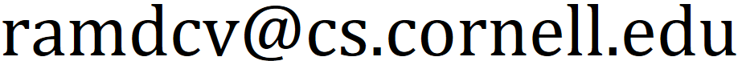

Ph.D Student
Department of Computer Science
Cornell University
Email:

About me. Since the fall of 2024, I have been a computer science Ph.D student at Cornell University. I am co-advised by Robert Kleinberg and Siddhartha Banerjee. My research interests include online algorithms, combinatorial optimization, and game theory. I am particularly interested in problems with economic motivations, such as online matching and online resource allocation more generally.
Before Cornell. I completed my B.S. in computer science at the University of Southern California (USC) in 2024. While at USC, I was advised by Shaddin Dughmi and worked closely with Haipeng Luo.